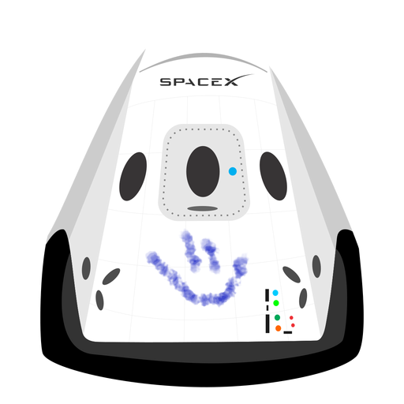

hyperblog
tu blog de cabecera
Este es el titulo atractivo e interesante del post
Estees el parrafo de inicio donde vamos a explicar las codas increibles que se pueden hacer con ramas

Los blogs son las mejor forma de compartir informaciony tus ideas. Muchas que ir a conferencias o salir en Youtube. Exepto si eres un Rockstar. pero estadisticamente no lo eres... por ahora
Nunca pares de aprender